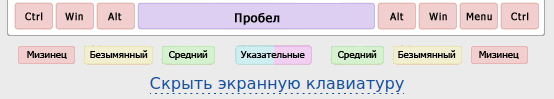
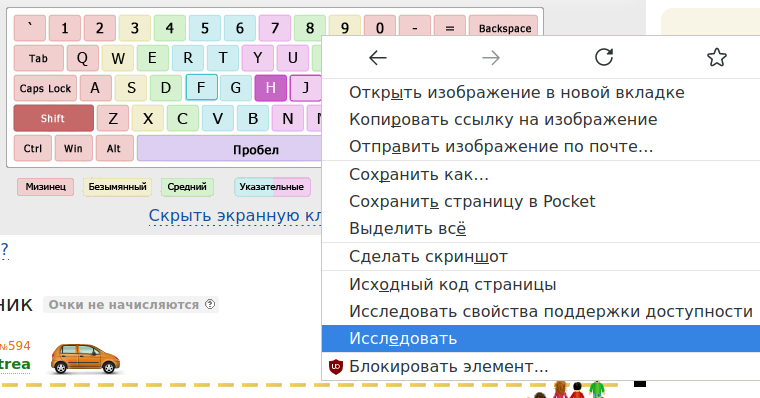
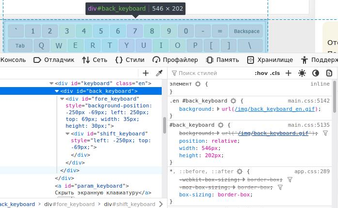
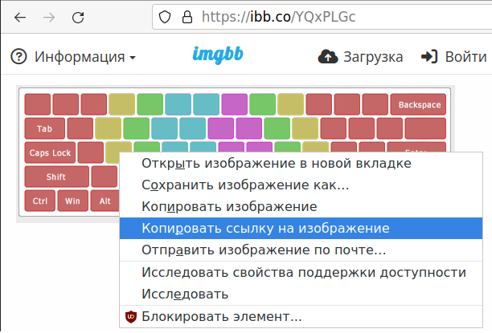

Всем хорош онлайн-тренажер клавиатуры Klavogonki.ru. Но чего-то в нем не хватает. Что же с ним не так? Все просто: слишком большой скачек сложности в тот момент, когда обучающийся скрывает экранную клавиатуру.

Можно ли этот скачек сложности как-нибудь сгладить? Да! Идея в том, чтобы показывать экранную клавиатуру, на которой не видно букв. По мере набора текста, на такой клавиатуре будет выделяться клавиша, но какой букве она соответсвует - не видно. Таким образом теряется визуальная связь между тем, какую клавишу надо нажать и какой букве она соответствует: видно только положение клавиши. Это и есть недостающая ступенька в постепенном повышении сложности.
Естественно, ждать пока разработчики сайта сделают такую функциональность не имеет смысла, так как у нас есть плагин для браузера Greasemonkey. С помощью него можно написать скрипт, который подменит картинки клавиатуры. И задача будет решена.
Здесь показано, как можно модифицировать английскую клавиатуру. Но, по тем же самым принципам, можно изменить и русскую клавиатуру.
Подготовка
Итак, что надо сделать?
Во-первых, необходимо установить плагин Greasemonkey.
Во-вторых, надо разобраться, какие картинки отвечают за клавиатуру. Это делается просто: по правой кнопке выделяется элемент (картинка клавиатуры) и в контекстном меню выбирается Исследовать:

Можно увидеть, что клавиатура состоит из двух картинок, размещенных как фоновые картинки в блоках <div> с идентификаторами back_keyboard и fore_keyboard:

Сами картинки лежат по следующим урлам:
http://klavogonki.ru/img/back_keyboard_en.gif
http://klavogonki.ru/img/fore_keyboard_en.gif
В третьих, надо выкачать эти картинки, стереть в них буквы любым текстовым редактором, и разместить исправленные картинки где-нибудь в Интернете. Например, можно воспользоваться сервисом ImgBB. Главное, что нужно получить прямые ссылки на картинки, а не просто ссылки на страницу картинки:

В результате получатся примерно такие ссылки:
https://i.ibb.co/B5LG95k/fore-keyboard-en.png
https://i.ibb.co/H98Vpe5/fore-keyboard-en.png